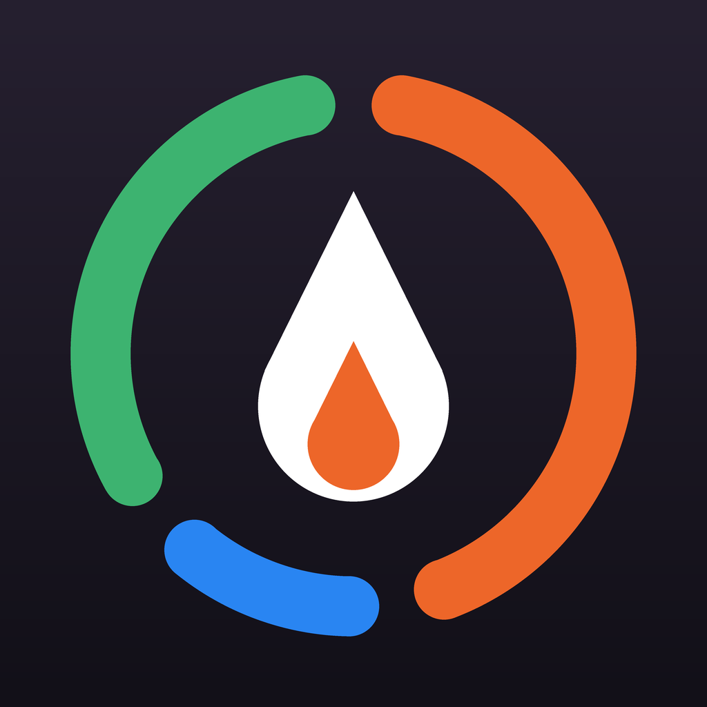

Apple Watch で、サウナ・水風呂・外気浴の時間と心拍を記録するアプリです。濡れた手でも、ダブルタップでフェーズを切り替えられます。
ダブルタップが使えません
ダブルタップは Apple Watch Series 9 / Ultra 2 以降で使えます。それ以前の機種では、画面のボタンか Digital Crown で切り替えてください。
心拍が表示されません
iPhone の「ヘルスケア」アプリ → プロフィール → アプリ → サ活ウォッチ で、心拍数の読み出しが許可されているか確認してください。
近くの施設が候補に出ません
Apple Watch の「設定」→「プライバシーとセキュリティ」→「位置情報サービス」で、サ活ウォッチの位置情報を許可してください。Apple マップに登録されていない施設は候補に出ないため、iPhone で施設名を入力できます。
記録を別の iPhone に移したい
同じ Apple Account で iCloud にサインインしていれば、記録は自動で同期されます。なお心拍のデータは iCloud には保存せず、ヘルスケアに保存されたワークアウトとして残ります。
本アプリは医療機器ではありません。表示される心拍数などは目安です。体調に異変を感じたら、すぐにサウナの利用を中止してください。